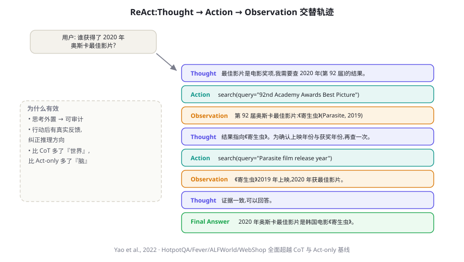

章节标题
一段 80~140 字的导语：本章回答什么问题、读完能获得什么、适合谁读。
第一个小节标题
正文……重点加粗、行内代码 like_this、站内链接 第 16 章。
💡 实践建议
……

| 列 A | 列 B |
|---|---|
| … | … |
python示例标题
print("hello agent") # 关键行加中文注释📄 论文速览：ReAct: Synergizing Reasoning and Acting in Language Models
两三句话说清：问题、方法、关键结果。
本章小结
- 要点 1
- 要点 2
自测题
- 问题 1？（提示：……）
参考文献与延伸阅读
- Yao, S. et al. (2022). ReAct: Synergizing Reasoning and Acting in Language Models. ICLR 2023. arXiv:2210.03629